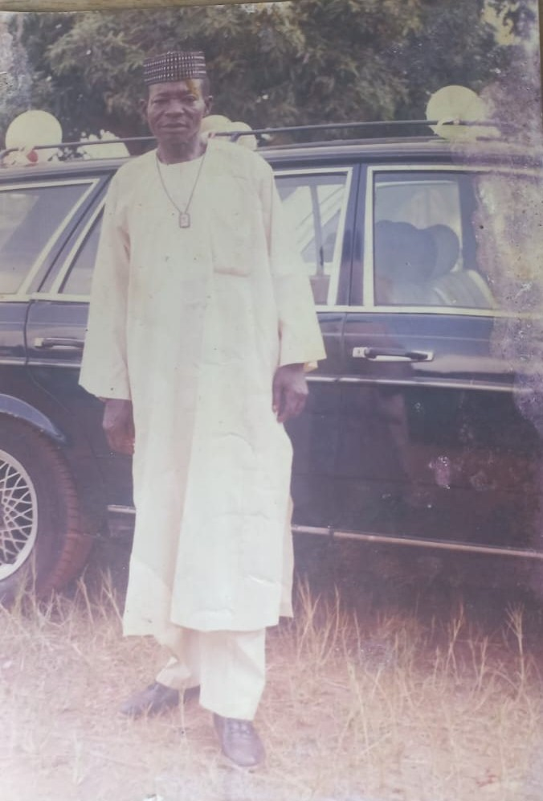
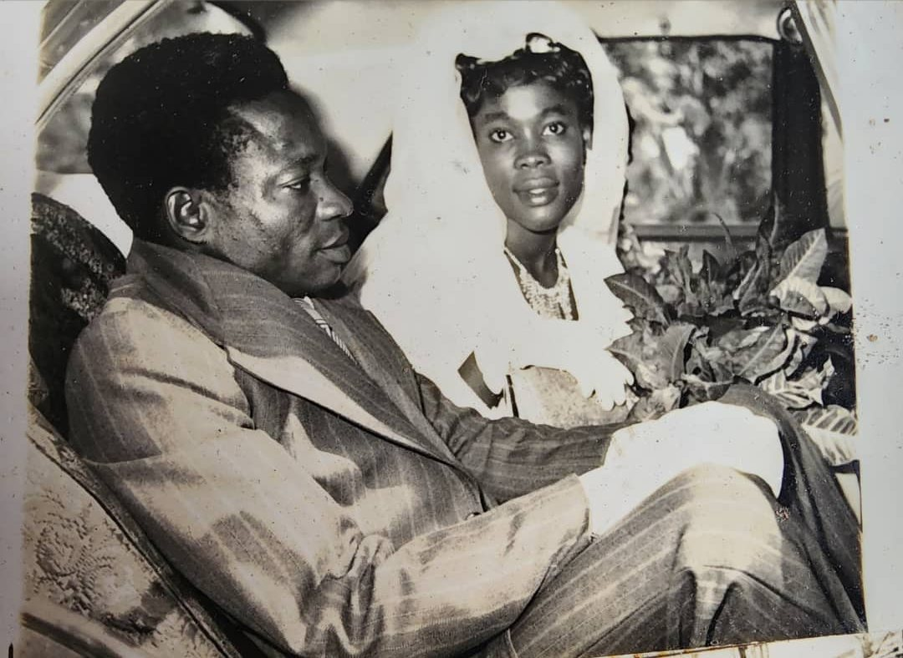
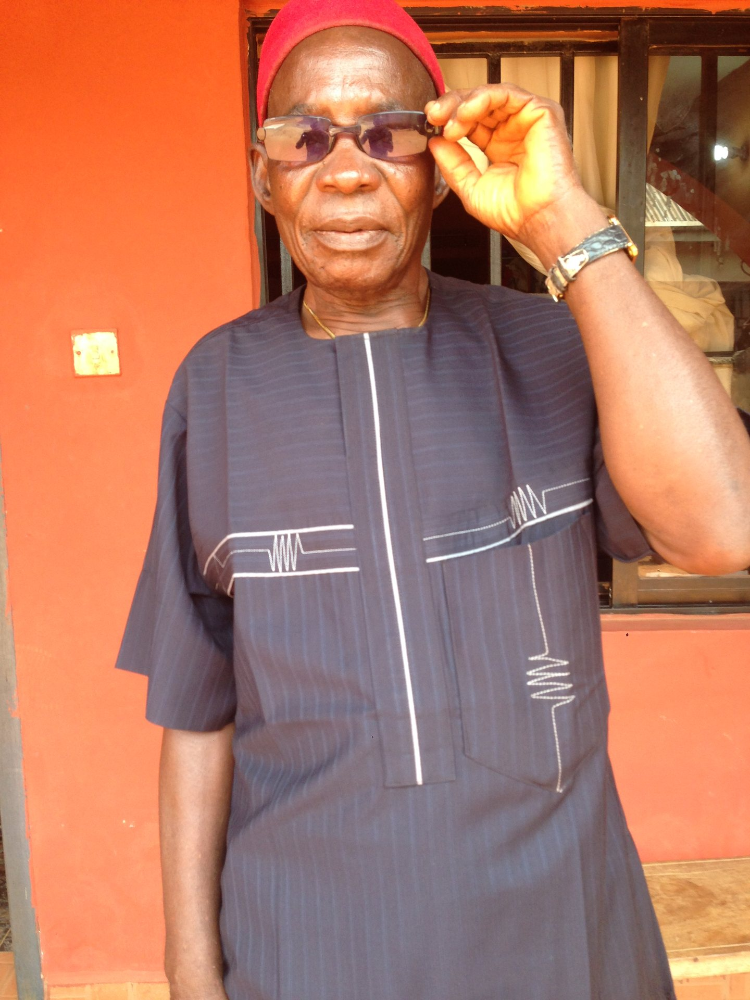

1. Early Life and Family Background
Pa Hyacinth Nwafor Ogunor, fondly known as Orameife, Obuwetaku, and affectionately addressed by many as Nnam or Okoye, was born on June 11th 1936, to the family of Nkwocha Ogunor and Mgbeke Ogunor of Enuagu Village, Enugwu-Ukwu, in present-day Njikoka Local Government Area of Anambra State. He was the second son of his parents.
Growing up in an era when family, communal responsibility, and cultural values formed the foundation of everyday life, young Hyacinth developed a deep appreciation for truth, discipline, history, and tradition. These values would remain defining features of his character throughout his life.
He was raised with an understanding of the importance of family ties and the responsibility each generation bears to preserve the heritage it has inherited. His remarkable knowledge of family history, genealogy, and the traditions of his people would later distinguish him as a respected custodian of knowledge within his kindred and the wider community.
He began his formal education at Arinze Primary School, where he received his early education before venturing into the world of commerce. His early years laid the foundation for a life characterised by hard work, resilience, and an enduring commitment to family and community.
2. Early Career: Commerce, Enterprise and the Nigerian Civil War
Following his primary education, young Hyacinth joined his elder brother, the late Mr Christopher Ogunor, in Kafanchan, in present-day Kaduna State, where he began his journey in trading. His commercial activities took him between Kafanchan and Jos, sourcing goods and merchandise for resale. These journeys exposed him to life beyond his immediate community, different cultures, and the discipline of commerce.
It was a period that demanded hard work, resourcefulness, and courage. Through trading, he developed an appreciation for enterprise and the dignity of honest labour, qualities that remained evident in his approach to life.
However, the outbreak of the Nigerian Civil War in 1967 disrupted the lives and livelihoods of countless families across the country, including his. As the crisis unfolded, Hyacinth and his elder brother returned to Eastern Nigeria, leaving behind the commercial environment they had established in the North. Despite the uncertainty and difficulties of the war years, the brothers remained resilient and continued their trading activities in the East.
This chapter of his life reflected a quality that would come to define him: the ability to adapt to difficult circumstances, remain determined, and continue working towards a better future, regardless of the challenges before him.

From his years of trade and travel across Northern Nigeria.
3. Contributing to Nigeria’s Electrification and Infrastructure Development
Following the end of the Civil War in 1970, Pa Hyacinth embarked on a new professional chapter when he joined Siemens as a contract staff member on a major electricity transmission infrastructure project.
His work involved the construction of high-voltage electricity transmission lines across different parts of Nigeria, beginning from Enugu and extending through Numan, Mubi, and areas of the former Gongola State, including territories now within Adamawa and Gombe states.
At a time when Nigeria was rebuilding from the devastation of the Civil War and expanding its national infrastructure, these projects formed part of the country’s efforts to extend electricity transmission and improve access to power across different regions. Working on such projects demanded dedication, mobility, endurance, and the willingness to operate in unfamiliar environments, often far from home.
Pa Hyacinth contributed his labour and skills to this important phase of Nigeria’s infrastructure development. His participation in these projects remained a significant chapter in his working life and a source of pride in the story of his professional journey. Beyond the employment it provided, this experience represented his personal contribution to a national effort to connect communities, support economic development, and improve lives through access to electricity.
Following the completion of his contract with Siemens, he ventured briefly into construction and carpentry, demonstrating his versatility and continued commitment to earning an honest living. His ability to move between commerce, technical infrastructure work, and skilled trades illustrated a man who was never afraid of work and who understood that dignity was found in honest effort.
4. A Career in Public Service
Pa Hyacinth subsequently joined the civil service, where he served in the Office of the Auditor-General for Local Government. This marked the beginning of a long and stable career in public service, through which he continued to contribute to society while providing for his growing family.
He remained in service until he attained retirement age, bringing to a close a journey that had taken him from trading in Northern Nigeria to infrastructure development, skilled craftsmanship, and public service. Across these different occupations, one principle remained constant: his belief in the dignity of labour and the responsibility of a man to provide for his family through honest work.
He did not measure the worth of a person by the office they occupied or the wealth they accumulated. Rather, he believed that discipline, integrity, and a willingness to work were the true foundations of a respectable life. These convictions were not merely ideas he expressed; they were values he demonstrated through his own life and passed on to his children.
5. Marriage, Fatherhood and Family Life
On 17 December 1974, Pa Hyacinth married his beloved wife, the late Mrs Ogechukwu Ogunor (née Ochomma). Their union marked the beginning of a beautiful family journey founded on love, companionship, shared responsibility, and a commitment to raising children with strong moral and spiritual values. Their marriage was blessed with eight children.

Pa Hyacinth and his bride, Ogechukwu, on their wedding day — 17 December 1974.
Together, Pa Hyacinth and his wife worked to build a home where the fear of God, respect for humanity, education, discipline, and family unity were central values. For him, fatherhood was never simply about providing food, shelter, or material possessions. He understood it as a lifelong responsibility to nurture, guide, protect, and prepare his children for the future. He placed a particularly high value on education and was determined that his children should have opportunities to achieve more than he had been able to achieve himself.
His devotion to his family would face one of its greatest tests when, on 8 September 2013, his beloved wife passed away following a prolonged illness. Her death brought an end to nearly 39 years of marriage and left a profound void in the family they had built together.
Yet, in the face of this painful loss, Pa Hyacinth demonstrated extraordinary resilience. He became both father and mother to his children, providing not only guidance and material support but also the emotional strength and reassurance they needed to navigate life without their mother. Rather than allowing grief to diminish his commitment to the family, he remained steadfast in his responsibilities, continuing to nurture his children and support their aspirations.
He lived to see all eight of his children attain tertiary education and become graduates, an achievement that reflected the sacrifices, determination, and commitment that he and his late wife had invested in their family. For him, the achievements of his children were never merely individual successes — they represented the fulfilment of a lifelong commitment to give the next generation a stronger foundation.
6. A Loving Father, Grandfather and the Heart of the Family
Pa Hyacinth built a home in Enuagu Village that became much more than a family residence. It was a place of belonging, a meeting point for generations, and a welcoming home for children, grandchildren, in-laws, relatives, friends, and well-wishers. His family remained his greatest treasure.
He took an active interest in the lives of his children and grandchildren, maintaining close relationships with them regardless of where they lived. One of his most cherished habits was his daily phone calls. He would call his children and grandchildren simply to check on their well-being, ask about their families, and find out how their day was going. These calls, often filled with humour, advice, or a brief exchange of family news, became an important part of everyday life. He sustained this tradition until the final week of his life.
“A father is not only the one who gives birth. A father is the one who stays.”
For his family, those simple calls represented something far greater than routine communication — they were a constant expression of a father’s love, concern, and reassuring presence. He was equally delighted by the arrival of his grandchildren, whose presence brought fresh joy into his life and gave him the opportunity to extend his affection and wisdom to another generation.
Although the loss of his wife remained an enduring part of his personal story, he continued to uphold the family they had built together. He became its steady pillar, ensuring that the absence of one parent would not diminish the love, guidance, and sense of belonging that defined their home. In many ways, his greatest accomplishment was not found in the different professions he practised, but in the family he raised and the relationships he sustained throughout his lifetime.
7. Leadership, Family Heritage and Community Service
As the oldest man of Umuokpora Kindred, Pa Hyacinth naturally assumed the customary responsibility of headship within the kindred and the wider Ogunor family. His position was not the result of an appointment or an election — it came through his seniority as the eldest surviving man, in accordance with the traditions governing family leadership and the responsibilities of elders.
He was deeply respected for his knowledge of family history, genealogy, customs, and the traditions of his people, and possessed a remarkable ability to recall historical events, explain family relationships, and connect the experiences of earlier generations with the present. He understood that traditions were not merely ceremonies to be observed but a body of knowledge and values that must be preserved and passed from one generation to another.
As the eldest man, he played an important role in resolving disputes, maintaining harmony, and encouraging peaceful relationships among members of the kindred. He participated in important family occasions, offered guidance during marriages, welcomed newborns into the family, and provided counsel on matters that required the wisdom of an elder. His leadership was rooted in fairness, patience, truth, and an unwavering desire to preserve peace.
He often demonstrated that influence did not require great material possessions; it required the courage to stand for what was right and the discipline to remain committed to one’s responsibilities. In his passing, the family has lost not only its eldest man but also a living repository of its history, a voice of experience, and a custodian of the traditions that bind generations together.
8. A Man of Culture, Music and Remarkable Humour
Although Pa Hyacinth was a man of strong principles and considerable wisdom, he was equally known for his joyful disposition and remarkable sense of humour. He loved music and had a deep appreciation for the rich cultural traditions of his people.
In his younger years, he was an enthusiastic participant in traditional cultural activities and belonged to several dance and performance groups, including Nkpokiti and Atilogwu. He was also a member of Igba Enyi, maintaining his association with the group until advancing age no longer permitted him to participate actively in its performances. These engagements reflected his enthusiasm for Igbo cultural expression and his belief that music, dance, and communal celebration were important parts of preserving a people’s identity.
He was never a man who needed alcohol to enjoy life. Although he rarely drank, he had an infectious love for social gatherings and the company of others. His humour was one of his most memorable qualities — he enjoyed playful banter and could effortlessly turn an ordinary conversation into a moment of laughter, bringing warmth to gatherings and making those around him feel comfortable and welcome. He could be firm when circumstances required it, but he also knew when to laugh, tell a story, or lighten the mood.

His infectious humour was one of his most memorable qualities.
To those who knew him closely, he was not simply a man of tradition and discipline. He was also a lover of life who understood the importance of happiness, friendship, music, and laughter.
9. A Bridge Across Cultures: Language, Travel and Hospitality
Pa Hyacinth was a man whose experiences extended far beyond the boundaries of his birthplace. His years of trading, travelling, and working across different parts of Nigeria exposed him to diverse cultures, languages, and ways of life, enriching his understanding of people and strengthening his appreciation for humanity.
He spoke Igbo and Hausa fluently and had some knowledge of Tiv. His ability to communicate across these languages reflected the years he spent living and working among people from different ethnic and cultural backgrounds, and more importantly, his willingness to embrace the people and communities he encountered, regardless of their origins.
An enthusiastic traveller, he appreciated the warmth and generosity of the people who welcomed him during his journeys. From his trading days in Kafanchan and Jos to his involvement in infrastructure projects across Northern Nigeria, he encountered people from different walks of life and developed a lasting appreciation for their cultures and traditions. He carried those experiences home with him.
During his retirement, his home in Enuagu Village became a place where the same spirit of hospitality he had enjoyed during his travels was generously extended to others. He welcomed visitors to his community with genuine warmth, making time to engage them in conversation, share stories, and ensure they felt at home. Whether the visitor was a relative returning home, a friend, or someone visiting the community for the first time, Orameife understood the importance of making people feel welcome.
For him, hospitality was not simply a social obligation — it was an expression of his belief that every human being deserved kindness, dignity, and respect. He was proudly Igbo, deeply rooted in the traditions of his ancestors, yet his heart was large enough to embrace people from every part of Nigeria. His life demonstrated that one could remain firmly grounded in one’s cultural identity while appreciating and respecting the traditions of others.
10. Faith, Character and Personal Convictions
Pa Hyacinth was a committed Catholic and a member of several societies in St. Theresa’s Catholic Church, Enugwu-Ukwu. His Christian faith was an important foundation of his life and influenced the way he approached family responsibilities, relationships, and personal conduct. He believed strongly in raising his children in the fear of God and encouraged them to live with honesty, humility, compassion, and respect for others.
His faith existed alongside a profound appreciation for Igbo history and traditional values. He understood the importance of preserving cultural identity while remaining devoted to his Christian beliefs. He was a man who valued peace and happiness above unnecessary conflict, and preferred reconciliation to division, believing that a person’s character should be evident in how they treated others.
Truthfulness was particularly important to him. Whether he was recounting historical events, offering family advice, or addressing disagreements, he was guided by his conviction that truth and integrity should never be compromised for temporary convenience. He also believed deeply in self-discipline — to him, leadership began with the ability to govern oneself before seeking to guide others. Authority without character held little meaning, and wealth without integrity was never a measure of genuine accomplishment.
He taught that a person did not need to possess enormous resources before making a meaningful difference in the lives of others. Even with limited means, one could lead through example, offer guidance, preserve peace, provide encouragement, and positively influence the next generation. These convictions became some of his most enduring teachings to his children and remain central to the legacy he left behind.
Ninety Years of a Life Well Lived
Pa Hyacinth Nwafor Ogunor lived for 90 years, witnessing remarkable changes in his community, his country, and the world around him. His lifetime spanned the colonial era, Nigeria’s independence, the Civil War, the years of national reconstruction, and the transformation of society across successive generations.
He experienced the uncertainty of war, the demands of earning a livelihood, the responsibilities of marriage and fatherhood, the fulfilment of professional service, and the profound pain of losing his beloved wife. Through it all, he remained a man of resilience, strong convictions, and an enduring commitment to his family.
He was blessed to see his children grow into adulthood, pursue higher education, establish their own families, and give him grandchildren who brought joy to his later years. He remained a reassuring presence in the lives of his children and grandchildren, maintaining his familiar habit of checking on them until the final week of his life.
His passing marks the end of a remarkable earthly journey and the departure of a beloved father, grandfather, brother, uncle, family leader, and respected elder. For his family, the loss is deeply personal — they will miss his daily calls, his unmistakable humour, his historical accounts, his words of wisdom, and the strength of character that made him a reassuring presence in their lives.
For Umuokpora Kindred and the wider Ogunor family, his passing represents the departure of their eldest man and a custodian of family history whose knowledge and experience formed an important link between generations. For the many people who encountered him throughout his life, from his travels across Nigeria to the visitors he welcomed in Enuagu, his memory will remain associated with warmth, kindness, and hospitality.
Yet, even in grief, his family finds reasons for profound gratitude. They are grateful for the 90 years he lived, the sacrifices he made, the values he instilled, the memories he created, and the enduring influence he leaves behind. They take comfort in their Christian faith and in the hope that he has found eternal rest in the presence of God and is reunited with his beloved wife, Ogechukwu.
His earthly journey has ended, but the values he lived by remain an inheritance for those he leaves behind. He taught that leadership comes from within, that dignity lies in honest labour, that family must be nurtured, that tradition must be preserved, and that even a person of modest means can make an extraordinary difference in the world. He demonstrated that peace and happiness are worthy pursuits, that people should be treated with respect regardless of their origins, and that the true measure of a life is found in the positive influence it leaves on others.
He lived simply, loved deeply, worked diligently, welcomed generously, and led by example. His story will continue to be told in the homes of his children, in the laughter of his grandchildren, in the history of his kindred, and in the lives of all those he touched.
Although his voice will no longer be heard during those familiar morning calls, his words will continue to guide his family. His humour will live on in their memories, his values will remain their compass, and his good name will continue to speak for him. He leaves behind something greater than material possessions: a united family, a good name, treasured memories, a rich cultural heritage, and an example worthy of emulation.
His departure brings an earthly journey to a close, but his influence will remain alive in the generations that follow. For a good life leaves footprints that death cannot erase.
Obuwetaku — Rest in Peace